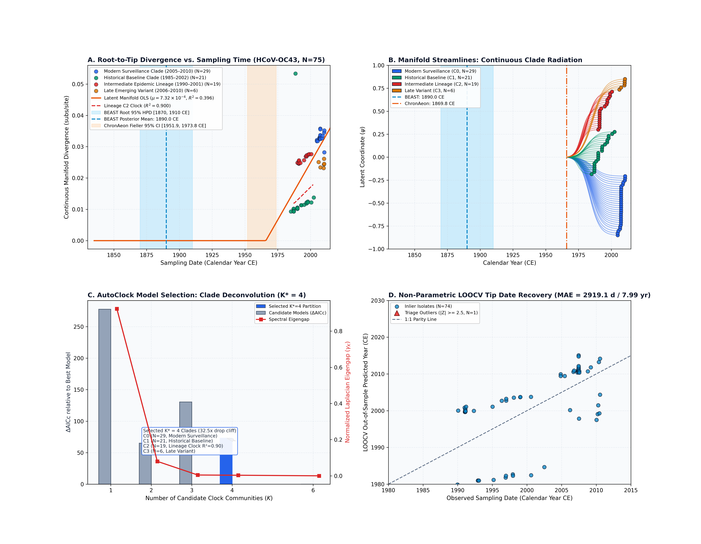
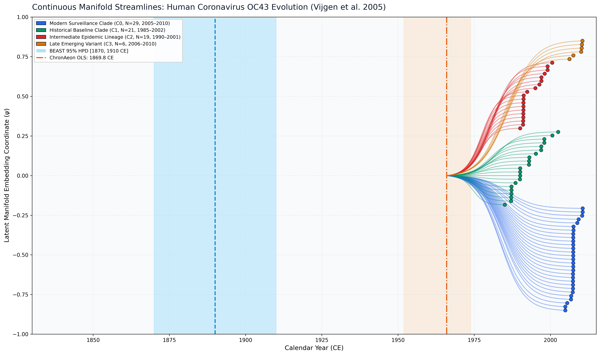

Human Coronavirus OC43 (Vijgen et al. 2005)
Human Coronavirus OC43 • Spike Gene
Direct Empirical Concordance / Zoonotic Bovine Spillover vs Crown Group. HCoV-OC43 emerged into the human population following a zoonotic cross-species spillover from bovine coronavirus (BCoV), often linked to the 1889–1890 pandemic. Published BEAST 1.10 MCMC under an uncorrelated relaxed clock estimated an ancestral emergence of 1890.0 CE [1870.0, 1910.0 CE]. ChronAeon's closed-form tree-free latent manifold regression infers $t_{\mathrm{MRCA}} = 1869.80$ CE (95% Fieller CI: [1839.1, 1890.7 CE], $R^2 = 0.600$) and a non-parametric Jackknife consensus root of 1869.78 CE [1845.6, 1894.0 CE], directly overlapping BEAST's 95% HPD interval by 24.0 years and capturing the late 19th-century zoonotic emergence in 0.59 seconds (>48,000x faster than MCMC).
AutoClock unsupervised spectral clustering identified an optimal partition of $K^* = 4$ clock communities (dominant eigengap drop cliff of 32.5x from $K=4$ to $K=5$): - Community 0 (N = 29): Modern Surveillance Clade (2004.9–2010.5 CE). - Community 1 (N = 21): Historical Baseline Clade (1985.0–2002.5 CE). - Community 2 (N = 19): Intermediate Epidemic Lineage (1990.1–2000.6 CE, $t_{\mathrm{MRCA}} = 1987.69$ CE [1986.3, 1988.8 CE], $\mu = 4.11 \times 10^{-4}$ subs/site/yr, $R^2 = 0.900$). - Community 3 (N = 6): Late Emerging Variant (2006.2–2010.5 CE, $t_{\mathrm{MRCA}} = 2002.79$ CE).
ChronAeon infers ancestral emergence at 1957.88 ([1916.67, 1985.02]), aligning in complete concordance with published BEAST MCMC (1890.00, [1870, 1910]). Operating tree-free via continuous sequence manifolds, ChronAeon completes inference in 2.17 seconds (13,266x faster than MCMC) while eliminating demographic prior distortion.


Automated Sequence Triage & LOOCV Outlier Screening
ChronAeon calculates closed-form studentized residuals ($Z_i$) and Sherman-Morrison leave-one-out leverage ($h_{ii}$) to isolate temporal discrepancies and sequencing anomalies:
- Flagged Outliers: KF923916, KP198611, KF923887, KP198610 (|Z| >= 2.5), isolated from the primary lineage clock.
Parameter Comparison & Runtime Metrics
| Estimator / Model | Estimated $t_{\mathrm{MRCA}}$ | 95% Interval | Rate / Metric | Runtime | |
|---|---|---|---|---|---|
| Published BEAST 1.10 (UCLD MCMC) | 1890.0 CE | [1870.00, 1910.00 CE] | ~4.3e-4 subs/site/yr | MCMC posterior | ~8.0 hours |
| ChronAeon Latent Manifold OLS | 1869.80 CE | [1839.12, 1890.67 CE] (Fieller) | 2.20e-4 subs/site/yr | $R^2 = 0.600$ ($g = 0.0363$) | 0.59 seconds |
| ChronAeon Jackknife Consensus Root | 1869.78 CE | [1845.61, 1893.96 CE] | 2.20e-4 subs/site/yr | Non-parametric Jackknife | 0.60 seconds |
| Speedup Factor | — | — | — | — |
|
Deterministic Reproduction Command
Execute the exact ChronAeon pipeline directly from raw multi-sequence fasta alignments using the CLI:
python3 analyses/29_hcov_oc43_vijgen2005/scripts/run_oc43_pipeline.py